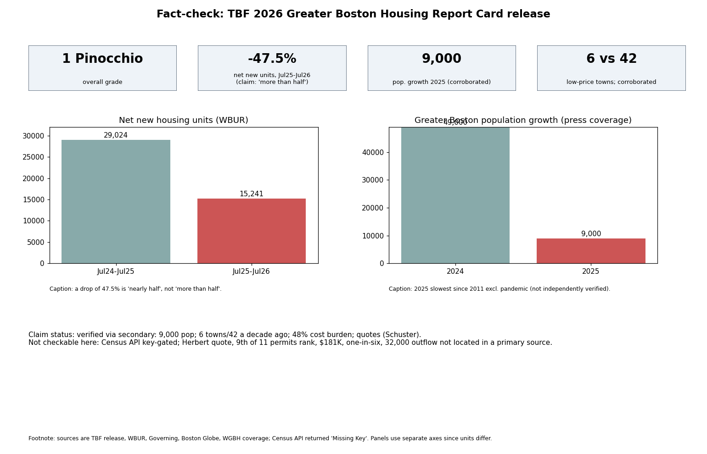

Fact-check: Boston Foundation 2026 Housing Report Card release

Mostly accurate, one overstated figure: 1 Pinocchio
The release is largely accurate (1 Pinocchio). The one claim that does not match published numbers is that new housing units "fell by more than half": WBUR reports net new units of 15,241 (Jul 2025 to Jul 2026) versus 29,024 the prior year, a 47.5% drop ("nearly half" per Governing). Other figures I could check were corroborated by news coverage of the same report (9,000 population growth, 6 communities under $500,000, 48% renter cost burden, Schuster quotes).
- The Census API is key-gated ("Missing Key"), so I could not re-derive population, ACS cost burden or address counts from primary data. Most checks are secondary (press coverage of the same report), not independent.
- Not checkable here: Herbert quote, 9th of 11 permit rank, $181,000, one in six renters, 32,000 domestic outflow, ~30,000 international in-migration.
- Possible misleading context: the prior year (29,024) was inflated by pandemic-delayed projects, so the drop partly reflects a spike. WBUR also writes "down 42%" for price-tier communities while TBF says "down from 42 communities"; the TBF reading is used.
Claims
| Claim | Verdict | Source |
|---|
| Region grew ~9,000 in 2025, slowest since 2011 excl. pandemic | Corroborated (secondary) | Boston Globe, Foundation email |
| New units fell by more than half | Overstated: -47.5% | WBUR, Governing |
| 2025 permits lowest in a decade | Corroborated (7,746 units) | Governing |
| Six communities under $500K, from 42 | Corroborated | WBUR, TBF |
| Over 48% renters cost-burdened (2024) | Corroborated | WBUR |
| Schuster quote | Not matched verbatim; WBUR quotes differ | WBUR |
| $181K, one in six, 9th of 11, Herbert quote, migration figures | Not checkable here | Release only; Axios 403 |
Confidence: medium; secondary sources only.
Sources
- https://www.tbf.org/news-and-insights/press-releases/2026/november/greater-boston-housing-report-card-release-20261110
- https://www.tbf.org/gbhrc2026
- https://www.wbur.org/news/2026/11/12/boston-indicators-housing-report-card
- https://governing.com/urban/bostons-housing-progress-is-showing-signs-of-stalling
- https://www.bostonglobe.com/2026/11/10/business/boston-housing-costs/
- https://www.wgbh.org/news/local/2026-11-10/federal-policy-worsens-boston-area-housing-crisis-says-report
- Census API (api.census.gov): key-gated